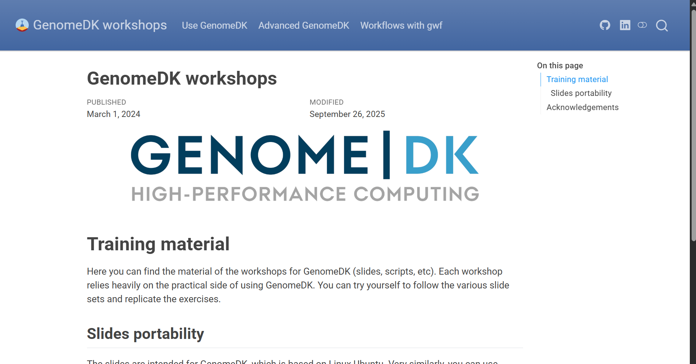
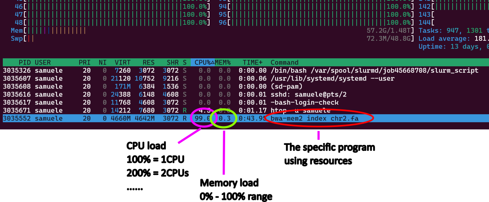

Advanced GenomeDK
More-than-basic things to do and tips for GDK, tinyurl.com/advGDK
Health Data Science sandbox, BiRC, AU
Molecular Biology and Genetics, AU
GenomeDK, Health, AU
2025-10-07
Some background
These slides are both a presentation and a small reference manual
In many slides you will be doing things - open your terminals and slides
Official reference documentation: genome.au.dk
Some advanced things require a bit of practice/frustration, but I hope to reduce it
Most important message before starting any workshop: RTFM - Read The Field Manual!. Though
- Some manuals can be lousy, but the ones for UNIX tools are usually good
- Unusual options might be buried somewhere or badly explained
When you need to ask for help
Practical help:
Samuele (BiRC, MBG) - samuele@birc.au.dk
Drop in hours:
- Bioinformatics Cafe: https://abc.au.dk, abcafe@au.dk
- Samuele (BiRC, MBG) - samuele@birc.au.dk - we just set up a meeting/zoom
General mail for assistance
support@genome.au.dk
Program
- 10:00-10:45:
- Workshop Introduction
- Frequently used on UNIX
- Github configuration
- 10:45-11:30:
rsynccopy and backups
- 11:30-12:00:
- Web applications, ports and tunnels
- 12:45-13:30:
- Containers (Docker, singularity)
- 13:30-:
- Questions and discussions
Extras
Documentation you can explore on your own.
An advanced function to download selected folders from github
Batch scripts
Managing multiple terminals on
tmux
Get the slides
Webpage: https://hds-sandbox.github.io/GDKworkshops/
Slides will always be up to date in this webpage
Navigate the slides

Frequently used on UNIX
- Configuration file(s)
- System variables
- Safety settings
- Shortcuts
Configuration files
Your ~/.bashrc file contains settings for your user. Those are bash commands which run at every login.
Common practice for many softwares is to have a configuration file in your home, often starting with ., which makes it a hidden file.
Examples:
.emacsfor emacs.gitconfigfor github.condarcfor conda.nanorcfor nano editor
Plus other things like your command history on the terminal (~/.bash_history) and your settings (~/.bashrc).
Exercise I: singularity settings
Let’s make a useful setting to run at each login. We will need a temporary folder for singularity containers (more on those later) when downloaded. Default is your home, which will be filled up in no time (folder ~/.singularity) with cache material.
Edit the file ~/.bashrc (use nano ~/.bashrc or any editor you want). Add those lines:
The -m 700 option for mkdir command ensures also you are the only one which can access the temporary files. Useful is you use a container with password or sensitive info, so no one can access it (/tmp/ is a public folder)!
Exercise II - aliases
Warning
Please run this exercise so that we can use some of the aliases and functions in the rest of the workshop.
Now, there are many repetitive things we do every day. For example:
- remove files and double check we can
cd ../andcd ../../and … andcd ../../../../../../../
and every time it is just annoying to waste precious time. Why not creating some aliases for all those deplorably long commands? Choose the aliases you prefere from the list below and add them in your .bashrc file:
Exercise III - functions
You can also create functions including multiple commands: for example making a directory and then cd into it.
Note
These are just inspirations, you can create any alias and function to avoid repetitive/long commands. Find all repetitive commands you use and wrap it up into the ~/.bashrc file!
Exercise finished
[Optional] Configure github on GenomeDK
Github is a web-based platform for version control and collaboration, built around the Git tool. You can get an account for free at github.com.
When you use Github on GenomeDK, you can configure your ssh keys to avoid writing your name and password every time you push or pull changes.
Create ssh key
On the cluster run
When asked, you can choose to name the file. Call it ~/.ssh/id_ed25519_github. When asked for password, you can leave it empty (press enter).
Add the ssh key to your ssh agent
Add the key to the ssh agent, which manages your keys. Write the following on your ~/.bashrc file using a text editor:
Now print your public key on the terminal. Copy it because you need to paste it on the github website:
Go on github.com and login. Go to Settings, SSH and GPG keys, New SSH key. Paste the public key you just copied and give it a name recalling it is for usage with GenomeDK.

Now, test your connection to github. First apply the changes from the ~/.bashrc file.
You should see a welcome message.
Syncronizations of data
- How to copy using
rsync - Use
rsyncto create backups and versioning
transfer and sync with rsync
rsync is a very versatile tool for
- transfering from remote to local host (and viceversa)
- copying from local to local host (e.g. data backups/sync)
- transfering only files which has changed from last copy (incremental copy)
Warning
rsync cannot make a transfer between two remote hosts, e.g. running from your PC to transfer data between GenomeDK and Computerome.
rsync cannot download from web URLs
Lots of options you can find in the manual (would require a workshop only for that)
Exercise
Log into GenomeDK. Create anywhere you prefere a folder called advancedGDK containing rsync/data
Create 100 files with extensions fastq and log in the data folder
Local-to-local copy
Note
The syntax of rsync is pretty simple:
rsync OPTIONS ORIGIN(s) DESTINATION
An archive (incremental) copy can be done with the options a. You can add a progress bar with P. You can exclude files: here we want only the ones with fastq extension. Run the command
This will copy all the fastq files in backup/data. You can check with ls.
Syntax perks
Using data will copy the entire folder, while data/ will copy only its content! This is common to many other UNIX tools.
Change the first ten fastq files with some text:
Now, we do not only want to do an incremental copy of those file with rsync, but also keep the previous version of those files. We create a folder to backup those, naming it with date and time (you will find it in your backup directory):
Tip
If you create a folder called backup in your project folder, you can use versioning to backup your analysis and results incrementally on the cluster’s backup system. Keep an eye on the space used!
Exercise finished
Transfer between local and remote
You can in the same way transfer and backup data between your local host (your PC, or GenomeDK) and another remote host (another cluster). You need Linux or Mac on the local host. For example, to get on your computer the same fastq files:
The opposite can be done uploading data from your computer. For example:
Avoid a typical error
To transfer from GenomeDK to your computer, and viceversa, you need to use the commands above from your local computer, and NOT when you are logged into GenomeDK!
Web applications, ports, tunneling
Web applications
Why do we use web applications for graphical interfaces?
- all the graphics heavy-lifting is done by the browser
- before, the X11 forwarding was the way to do graphics from remote
- problem: X11 sends the whole graphics over the network, which is slow
- on the interactive desktop, rstudio runs using VNC (better than X11)
A web application on GenomeDK:
- starts a server process on the cluster
- This server listens for incoming requests on a specific port
- The server sends and receives data over the network via the port.
The local user:
- creates a tunnel, which is an
sshconnection mapping to the remote port used by the server process
How the port forwarding looks like from the local user (your pc) to the remote node of the cluster. The purple command has to be launched on the local computer, once the server is running on the remote host. Source: KU Leuven.
Which port to use
Each server process on a machine needs a unique port (p2 on previous figure) to avoid conflicts.
Ports are in common between users on GenomeDK. So you can only use the port corresponding to your user number, which you can see with
echo $UIDYou will see all this in the next exercise
better safe than sorry
Launch a web application which has tokens (a random code in the URL for the browser) or a password you can setup. In theory, anyone on your same node of the cluster can get into your server process and see your program and data!
Exercise: jupyterlab web server
If you DO NOT have the conda package manager, you can quickly install it from the box below, otherwise move to the next slide!
Install conda
Run the installation script to install the software. There are some informative messages during the installation. You might need to say yes a few times
When you are done, you need a little bit of configuration. You can run the following command to configure conda (run them only once, they are not needed again):
Now you are ready to move on!
Create a new conda environment:
Start a job with just a few resources.
Now activate your environment and run jupyterlab. The node name (remote host) and your user ID (for the port number) are given as variables to the web server simply using $(hostname) and $UID:
You will see some messages and recognize an address with: your node and your user ID. Below it, the URL you can use in your browser, which always starts with the node name. It will look like this, but in your case it might have a longer URL with a random token (mine is instead password protected):
Write down your node number and user id you got from jupyterlab.
We now need a tunnel from the local host (your PC)! Write in a new terminal (not logged into GenomeDK) a command like the following (matching the example figure above), substituting the correct values:
Your tunnel is now opened. The web application can be accessed from your browser at the address given by the server process on GenomeDK, which starts with 127.0.0.1/PORT_NUMBER (put your correct port number). Copy and paste it in your browser.
Exercise finished
Tip
The same logic applies to all other web applications. They will have similar options to define the remote node and port.
Usually the host node option changes name between ip, host, address, or hostname.
Note also that you will always have to use the address 127.0.0.1/PORT_NUMBER on your browser when you do the tunneling. Instead you will need to use the address with the node name if you are using the virtual desktop on GenomeDK.
Containers
What is a container
Container = Standalone and portable software package including
- code
- runtime
- libraries
- system tools
- operating system-level dependencies
Deployment of a container on different HPCs and PCs is reproducible. A virtual environment (conda, mamba, pixi, cargo, npm, …) depends instead on the host system and is not necessarily fully reproducible on two different computer hardwares.
Container vs virtual env vs VM
A virtual environment isolates dependencies for a specific programming language within the same operating system. It does not include the operating system or system-level dependencies, so it depends on the hosting system.
- A virtual machine (VM) virtualizes an entire operating system, including the kernel, and runs on a hypervisor (assigns resources to the VM).
Scope of containers
Containers are usually thought as packing a specific application which can run anywhere (or, which is portable).
E.g. annoying bioinformatics software requiring specific libraries or long installations.
Many containers are done with Docker, but this is not installed on GenomeDK
GenomeDK has Singularity, which can also run programs installed in Docker containers.
Very practical to pull and use containers in workflows.
Where to find containers?
Typical repositories with pre-built containers are:
Biocontainers: community-driven initiative to containerize bioinf softwares.
- x10K tools x100K+ containers
- bioconda package index lists all software versions
- the Registry page has a searchable interface to find what you need
DockerHub registry: Public hub for Docker images, often including official containers from software developers
Quay: Same philosophy of DockerHub.
Once you find a container on the websites, simply use (eventually adapt) the provided code to pull it locally.
Exercise I: a simple bioinformatics container
We use biocontainers to pull containers and recreate a little bulkRNA alignment.
Make a folder called containers101 in the advancedGDK directory.
Find a bash bioinformatics software you know on the Biocontainer Registry and open it to see a detailed description - if you have no good ideas look for the minimap2 aligner. You should see a software documentation illustrating how to run the software in various ways - see next slide for a screenshot.
{kind=link}
The page will suggest to run immediately the container with singularity. I would suggest downloading it first (pull instead of run) and then running it.
In the case of minimap2:
which creates a container file in your current directory, and calls it minimap2.sif (better name than the default minimap2:2.28--h577a1d6_4).
You can either run the container, which opens a CLI into it, where you can execute the program. A non-interactive way (useful for pipelines) is to write the command directly. For example:
Exercise II: options for singularity
Some containers are very easy to run. Some others need a lot of extra options, such as binding specific folders to a path, providing certificates, initializing environmental variables. A small example below:
Environment variables
The option --env can be used to define environment variables, either needed by your software, or useful to write the code to be executed.
singularity pull samtools.sif https://depot.galaxyproject.org/singularity/samtools:1.21--h96c455f_1
singularity run --env REF_PATH=$(pwd) \
--env BAM_PREFIX=test01 \
samtools.sif \
samtools view \
-h https://github.com/roryk/tiny-test-data/raw/refs/heads/master/wgs/mt.sorted.bam \
-O bam > test01.bamUps, it does not work! Can you think of why? Hint: note that the address for the download of data begins with https.
Certificates and binding
Why the previous slide didn’t work!!!
HTTPS is a protocol for secure communication over the internet. When you access an URL starting with https, your system checks the server’s SSL/TLS certificate to ensure it is issued by a trusted Certificate Authority (CA). Why? To prevent man-in-the-middle (MITM) attacks, where an attacker eavesdrops in the data transfer.
The option --bind can be used to make your folders available in a specific path for the container. Here, we bind two folders containing the certificates for GDK. Those paths are quite standard across UNIX systems.
Exercise finished
Building containers
If you want to build containers with Docker, you need to
- build locally, and then upload the container to a repository (DockerHub or Quay).
- pull them on GenomeDK with singularity
The same holds for singularity, because you need root privileges to build a container on the cluster, which you do not have.
Other options for singularity
A few other options which can be used in singularity. When you need those really depends on the application:
--fakeroot: Allows running the container with root privileges in a user namespace. Useful for containers that require root access without needing actual root privileges.--writable: Enables writing to the container image. This is useful for making changes to the container, but it requires the container to be writable.--writable-tmpfsto avoid changes to be persistent in a non-writable container.--contain: Isolates the container from the host system by limiting access to the host’s filesystem.--no-home: Prevents the container from automatically binding the user’s home directory. Avoids exposing your home directory to the container.--cleanenv: Clears all environment variables except those explicitly set for the container.--nv: Enables NVIDIA GPU support by binding the necessary libraries and drivers. Equivalent for AMD GPUs is--rocm(not the case on GDK).--pwd: Sets the working directory inside the container.
Closing the workshop
Please fill out this form :)
A lot of things we could not cover
use the official documentation!
ask for help, use drop in hours (ABC cafe)
try out stuff and google yourself out of small problems
Slides updated over time, use as a reference
Next workshop all about pipelines
Extras
Things that are more advanced or are not treated in the workshop, but you might find useful.
A more advanced bash function for github
Here a more advanced bash function you can paste into your ~/.bashrc file. Why not making one for git clone downloading only the latest commit history and choosing specific folders for the repository?
# Git clone with depth 1 and choice of folders
# arg 1: username/repository
# arg 2: folders and files in quotes '', backspace separator
# arg 3: local download folder name (optional, default:repo)
# arg 4: branch (optional, default:main)
# Examples:
# ghdir github/gitignore 'community Global' test01 main
# ghdir github/gitignore 'community Global'
ghdir() {
echo Downloading from $1 in folder $3
echo Selecting $2
if [ -z "$4" ]; then
BRANCH="-b main"
else
BRANCH="-b $4"
fi
git clone --no-checkout $BRANCH --filter=blob:none --depth 1 https://github.com/$1.git $3
if [ -z "$3" ]; then
folder=$(echo "$1" | cut -d'/' -f2)
cd "$folder"
else
cd "$3"
fi
git sparse-checkout init --cone
git sparse-checkout set $2
git checkout
}Batch script (sbatch)
Useful to run a program non-interactively, usually for longer time and without interaction from the user. A batch script contains
- the desired resources
- the sequence of commands to be executed
and
- has a filename without spaces (forget spaces from now on)
Exercise: batch script
Create in Rstudio or Jupyterlab a file called align.sh (in the folder GDKintro) like below:
In the terminal, you need to install two new packages
and download a reference genome
Send the script to the queueing system using the terminal:
Interrogate SLURM about the specific job with the provided number. For example
>Name : align.sh
>User : samuele
>Account : my_project
>Partition : short
>Nodes : s21n43
>Cores : 8
>GPUs : 0
>State : RUNNING
>...or about all the queued jobs
>JOBID PARTITION NAME USER ST TIME NODES NODELIST(REASON)
>33735928 short align.sh samuele R 1:12 1 s21n43
If you change your mind and want to cancel a job:
Choosing the right CPU-RAM
Try to run a job with a smaller dataset as a test. Or run one of many jobs of the same type. While the job is running
use
squeue --meand look at the job idlog into the job from the front-end terminal using an interactive session:
Warning
The command above only works if your job is still running! Otherwise it is finished, has failed or is still in queue.
- use
htop -u <username>to see what is running and how much memory and CPU it uses 
Manage multiple terminals with tmux
tmux is a server application managing multiple terminal sessions. It can
- start a server with multiple sessions
- each session containing one or more windows with multiple terminals (panes)
- each terminal run simultaneously and be accessed (attached) or exited from (detached)
- the tmux server keeps runninng without a logged user

Exercise
tmux is a keyboard-only software. But you can set it up also to change windows and panes with the mouse. Simply run this command (only once) to enable mouse usage:
Warning
Using the mouse can create problems in some terminal programs, where copy-paste starts acting weird, e.g. on Mac computers and on Windows’ Moba XTerm software. In case you have a bad experience, remove the mouse setup from the file ~/.tmux.conf
You can start a tmux session anywhere. It is easier to navigate sessions giving them a name. For example start a session called example1:
The command will set you into the session automatically. The window looks something like below:
Now, you are in session example1 and have one window, which you are using now. You can split the window in multiple terminals. Try both those combinations of buttons:
Ctrl + b %
Ctrl + b ""
Or keep right-clicked with the mouse to choose the split.
Do split the window horizontally and vertically, running 3 terminals. You can select any of them with the mouse (left-click).
Try to select a window and resize it: while keeping Ctrl + b pressed, use the arrows to change the size
Now, you have your three panes running in a window.
Create a new window with Ctrl + b c. Or keep right-clicked on the window bar and create a new window.
You should see another window added in the bottom window bar. Again, switch between windows with your mouse (left-click!)
In the new window, let’s look at which tmux sessions and windows are open. Run
The output will tell you that session example1 is in use (attached) and has 2 windows. Something like this:
example1: 2 windows (created Wed Apr 2 16:12:54 2025) (attached)Launching separate downloads at the same time
Start a new session without attaching to it (d option), and call it downloads:
verify the session is there with tmux ls.
Warning
If you want a new session attaching to it, you need to detach from the current session with Ctrl + b + d.
Create a text file with few example files for this workshop to be downloaded.
Now, the script below launches all the URLs from the list in the download session in a new window. The new window closes after the download. If there are less than K downloads active, a new one starts, until the end! You can use this and close your terminal. The downloads will keep going and the window names will be shown to keep an eye on the current downloads. Try it out and use it whenever you have massive number of file downloads.
mkdir -p downloaded
K=2 # Maximum number of concurrent downloads
while read -r url; do
# Wait until the number of active tmux windows in the "downloads" session is less than K
while [ "$(tmux list-windows -t downloads | wc -l)" -ge "$((K+1))" ]; do
sleep 1
done
# Extract the filename from the URL
filename=$(basename "$url")
# Start a new tmux window for the download
tmux new-window -t downloads -n "$filename" "wget -c $url -O downloaded/$filename && tmux kill-window"
tmux list-windows -t downloads -F "#{window_name}"
done < downloads.txtExercise finished